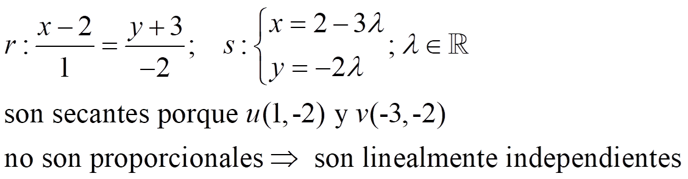

Dos rectas, r y s, pueden ser:
– Secantes, si se cortan en un punto. Si el ángulo que forman es de 90º, son perpendiculares.
- Coincidentes, si tienen los mismos puntos.
- Paralelas, si no se cortan en ningún punto.
Caso 1. Conocemos un punto y un vector director de cada recta: r {A,u}; s {B,v}
–Si u y v son linealmente dependientes:
- Si u y AB son linealmente dependientes, r y s son coincidentes.
- Si u y AB son linealmente independientes, r y s son paralelas.
– Si u y v son linealmente independientes: r y s son secantes.
Ejemplo:

Caso 2. Conocemos un punto y la pendiente de cada recta: r {A,mr}; s {B,ms}
–Si mr = ms:
- Si A Є s, r y s son coincidentes.
- Si A no pertenece a S, r y s son paralelas.
– Si mr ≠ ms: r y s son secantes.
Ejemplo:
Caso 3. Sabemos las ecuaciones implícitas de ambas rectas: r :Ax + By + C = 0; s: A’x+ B’y+ C’ = 0
Ejemplo:
Ejercicio. Determina la posición relativa de estos pares de rectas:
a) 3x + 3y - 5 = 0; 6x + 6y -11 = 0
b) y = 3x + 2 ; y - 3 = 2·(x+1)
c) x = 1 + λ
y = 3 -3λ , λ€R ; y = 3x + 2
d) 3x - 3y - 15 = 0; y + 2 = 1·(x - 3)
Soluciones: a) paralelas; b) secantes; c) secantes; d) coincidentes